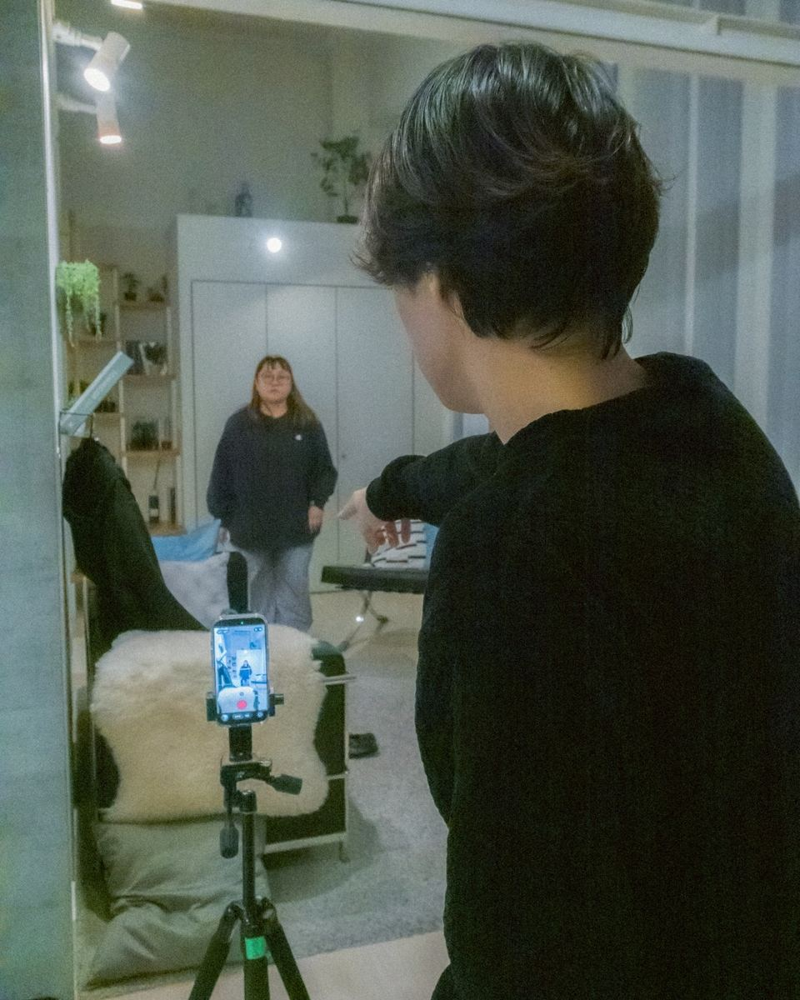
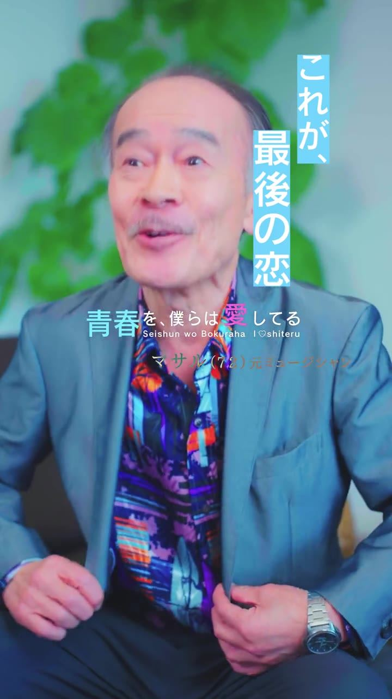
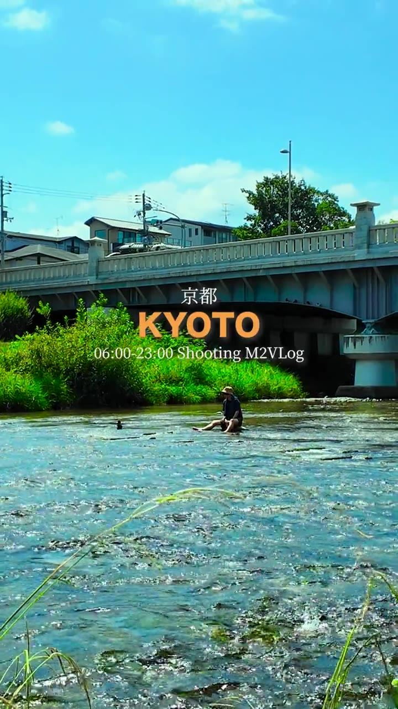
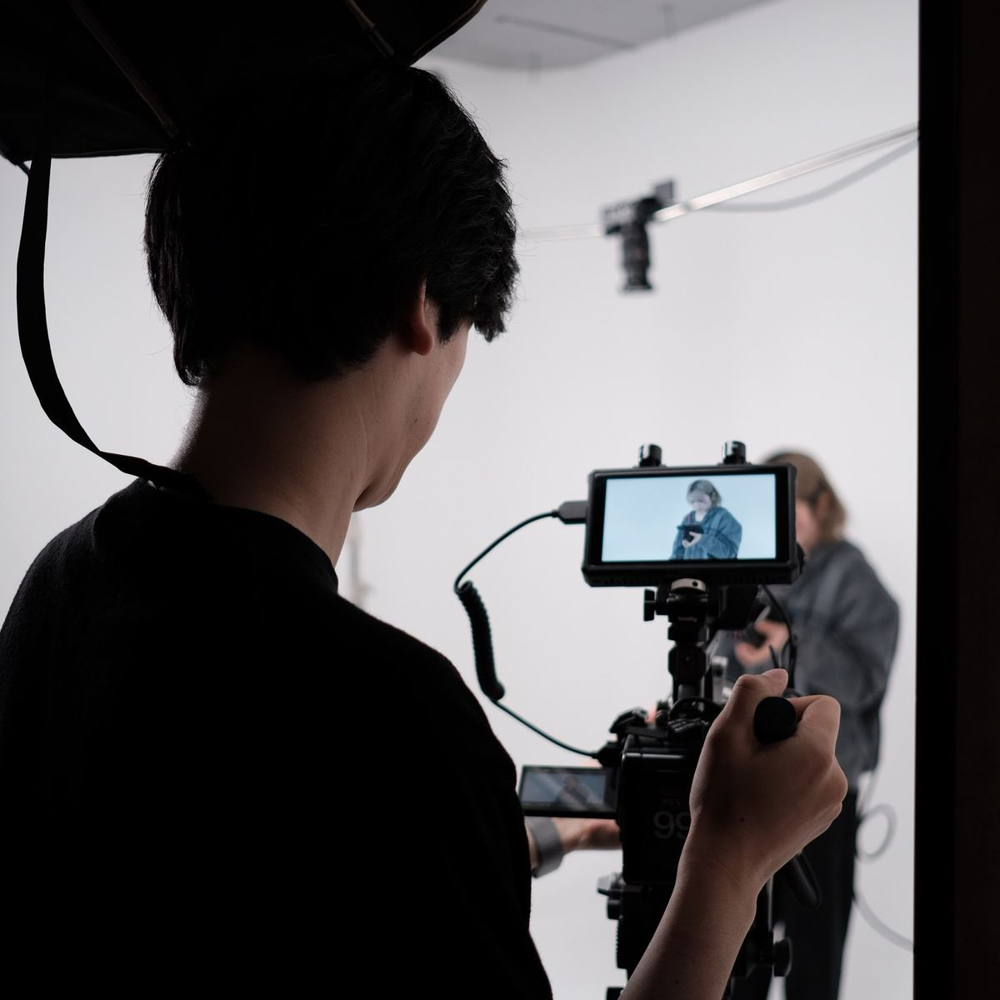
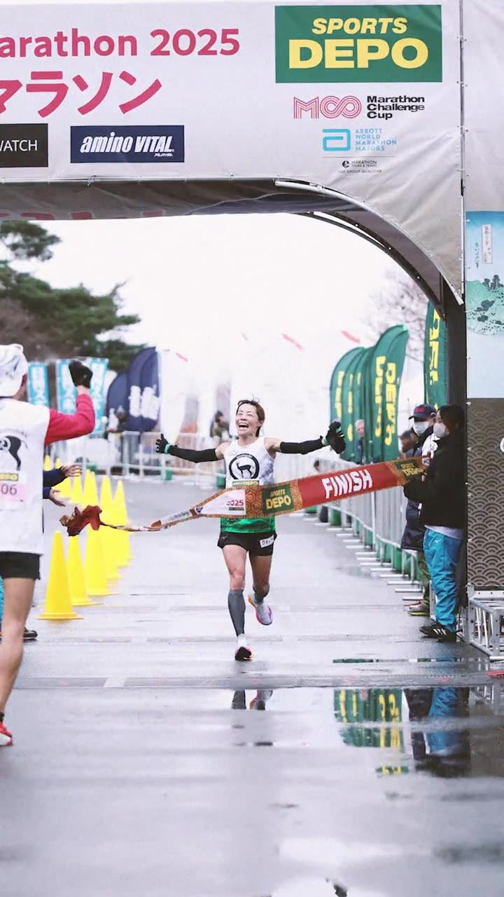
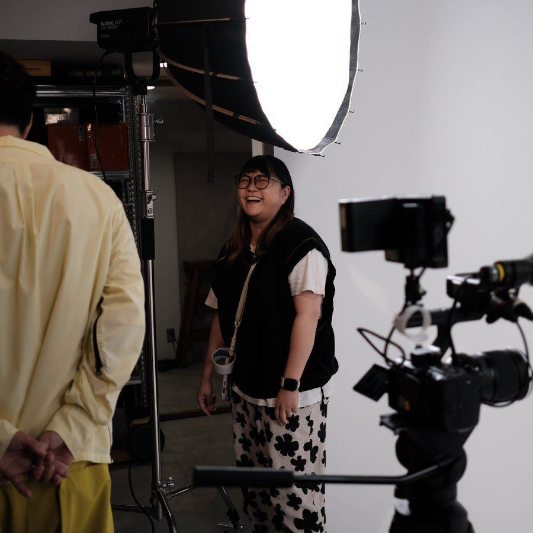
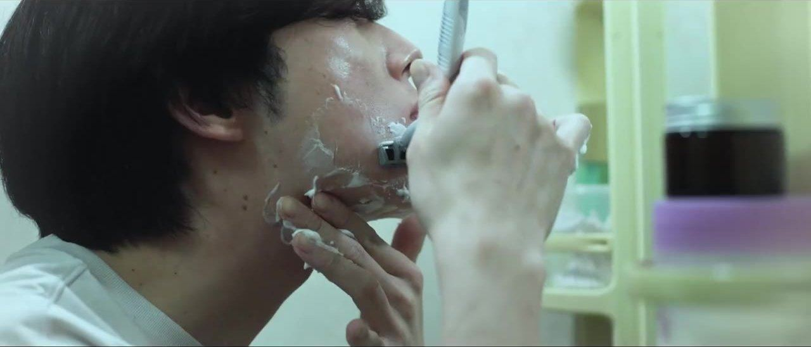
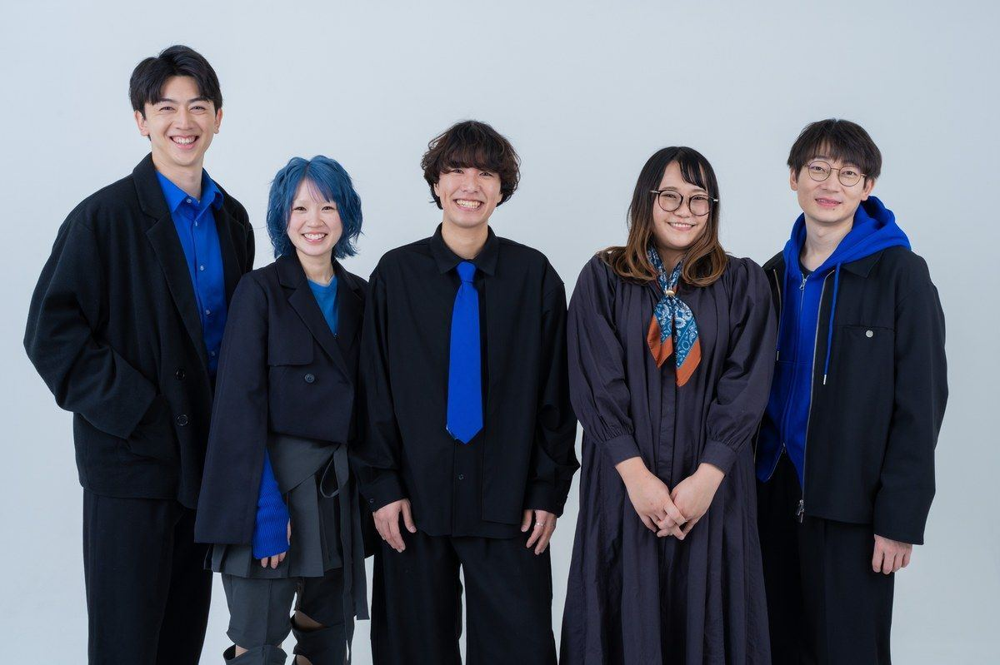

届けるまでが、
つくること。
SNSで届く企画と、映像をつくる力。その両方を持つチームが、御社の担当者として隣で走り続けます。一本で終わらない関係を、つくりたいと思っています。
第13回 BOVA オンライン動画部門 協賛企業賞
第13回 BOVA 縦型動画部門 ファイナリスト作品
準グランプリ
横にスワイプすると、ほかの作品も見られます。
- 第13回 BOVA オンライン動画部門 協賛企業賞
- 第13回 BOVA 縦型動画部門 ファイナリスト作品
- 「推して、秋田」映像コンテスト2026 準グランプリ
制作・運用実績：セガサミーホールディングス／セガフェイブ／MIXI／PHONE APPLI／日テレジータス／トイザらス／ドン・キホーテ／テレビ愛知／RINX／福島鰹／奥ジャパン／WAKAMATSU／有限会社キコリ ほか
映像は、
公開してからが本番。
いい映像をつくる。そこまでは、私たちにとって当たり前のことです。
本当の勝負は公開したあと。最後まで見られるか、届いてほしい人に届くか、見た人が動いてくれるか。そこまで考えて企画し、数字を見ながら次の一本に活かす。私たちは、それを「つくる」と呼んでいます。
できること
縦型のSNS動画も、横型のCMも。目的に合わせて、つくり方と届け方を選びます。



TikTokアカウント運用代行
担当者としてチームに入り、企画・撮影から投稿、月次の改善まで回します。
詳しく見る


ショート動画広告・ショートドラマ制作
広告として成果を出すショート動画と、続きが気になるショートドラマ。テレビやCMの現場出身のメンバーがつくります。
詳しく見る
映像制作・映像マーケティング支援
WebCM、ブランドムービー、採用・広告。映像をどう使うかから設計します。
詳しく見る企画・脚本・撮影・編集は、すべて内製。外部委託を挟まないから、意図がずれず、修正も速い。
これまでの成果
大手からローカルまで。認知・広告・採用・集客の4つの目的で。
大手玩具メーカーのYouTube。Shorts主体の認知設計で、2年で登録者100万人へ。
放送局系スポーツメディアで。継続運用でも20〜40円台を多数記録しています。
インフラ関連企業の採用TikTok。応募につながる最初の接点を、半年で40件。
大阪の理容室。1本の広告動画から、問い合わせが2〜3週間続きました。
※数値は運用実績の一例です。投稿後1週間時点の計測を含みます。

映像をつくる前に、
チームに入る。
外注は、納品したら終わり。でも映像もSNSも、つくったあとが本番です。だからM2Logは担当者として会議に出て、一緒に考え、届くところまで動きます。
「チームが増えたみたい」と言ってもらえることが、一番うれしい。代表取締役 中村陵介メンバーを見る
相談から、最初の一本が
世に出るまで。
ご契約から1か月前後で、最初の動画を公開します。
- 0契約前・無料
無料相談
まず話して、課題を整理します。方向が見えてきたら、ご提案の際にコンセプトとKPIの考え方までお持ちします。
- 11〜2週目
キックオフ・インプット
資料をいただき、話を聞き、現場にも足を運びます。企画の精度は、ここで決まります。
- 22〜3週目
企画・撮影
設計に沿って企画を固め、撮影へ。企画から編集まで、同じチームが担当します。
- 34週目〜
初稿・公開
撮影から約10日で初稿をお送りします。チェックを経て、最初の動画が世に出ます。
公開後は、月1回以上の定例に代表が直接参加します。月次レポートと改善提案を重ね、翌月の企画に反映していきます。
頼み方は、2つ。
1本だけでも、まるごとでも。どちらの入口からでも、同じチームが動きます。
映像を、1本からつくりたい
WebCM、ブランドムービー、採用動画、ショート動画。単発のご依頼も、企画から入って納品まで運びます。
- ショート動画（縦型）
- 1本 10万円〜
- WebCM・採用・ブランドムービー
- 30万円〜
企画・撮影・編集込み。お見積りは無償です。
制作について見るSNSを、まるごと任せたい
担当者としてチームに入り、企画・撮影・編集・投稿・分析まで一貫して。制作も内製だから、「つくる」と「届ける」を分けずに任せられます。
- SNS運用（伴走型）
- 月額 30万円台〜
内容・本数・体制によって形が変わるため、ご相談時に「この予算で何ができるか」を率直にお伝えします。内製化を目指す12か月プランもあります。
プランを見るよくある質問
金額感が分かりません。
目安として、単発のショート動画は1本10万円〜、継続のSNS運用は月30万円台〜です。内容・本数で変わるため、ご相談時に「この予算で何ができるか」を率直にお伝えします。お見積りは無償です。
具体的な案がなくても相談できますか？
できます。実際、ほとんどのご相談がその状態から始まります。方向が見えてきたら、ご提案の際にコンセプトとKPIの考え方までお持ちするので、比較検討の材料としてもお使いいただけます。
東京以外でも対応できますか？
撮影・打ち合わせとも、全国に伺えます。出張にかかる費用は、お見積りの段階で明示してご提案します。オンラインでの定例・相談にも対応しています。
ほかの映像制作会社・SNS運用会社との違いは？
一番の違いは、たぶん「人」です。テレビ、CM、スポーツ撮影と、それぞれ別の現場で育った5人が集まっているので、企画会議ではいつも意見がぶつかり、そこから面白いアイデアが生まれます。その熱量のまま、つくる前から目的や届け方を一緒に考え、つくったあとも投稿や改善まで担当者として付き合います。SNS運用・広告・単発制作のどれかに縛られず、目的に合う形を選べるのも、制作と運用を同じチームでやっているからです。一度話してもらえれば、チームの雰囲気はすぐに伝わると思います。